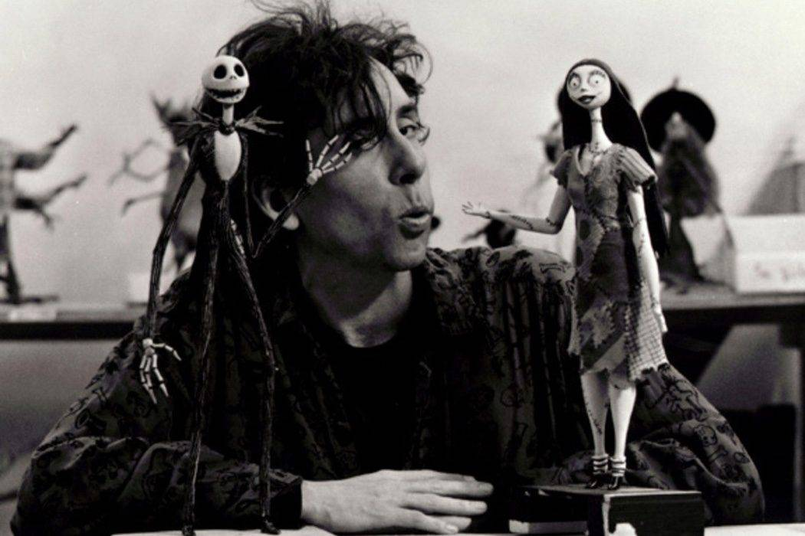

ORIGEN
Su origen se ve entre varios países; en este caso concreto entre Inglaterra, Estados Unidos, Francia, y, en menor medida, España y Rusia; y ha estado supeditada al patriotismo del historiador cinematográfico de turno. Se indican que fue entre finales de 1800 y principios de 1900.
La retina capta imágenes estáticas que permanecen un tiempo en el pigmento retiniano, la sucesión rápida de imágenes en el tiempo permite recrear al ojo la ilusión del movimiento real. Los primeros artilugios mecánicos como el zoetrope o el praxinocopio recreaban el movimiento usando dibujos o fotografías en sucesión.
Con el desarrollo de los proyectores y la idea de captar la realidad en un rollo fotográfico persistió, surgió la idea también de filmar cuadro a cuadro fotogramas fijos que después generaran la ilusión de movimiento de objetos, muñecos o hasta dibujos en el celuloide naciendo la animación.
La animación 3D stop motion presenta dos trayectorias históricas muy claras: la primera, la tradición eminentemente europea de las películas stop motion de artistas individuales y de las series infantiles para la televisión, y la segunda, eminentemente hollywoodiense, es la historia invisible de la animación stop motionutilizada para los efectos especiales de los largometrajes.
Sus primero usos fueron efectos especiales en el cine mudo (Georges Méliès), la animación cuadro a cuadro o stop motion se diferenció como un género propio desde época muy temprana.
|  |
Universidad Centroamericana 2021- Trabajo para asignación Digital 3 - Andrea Guevara